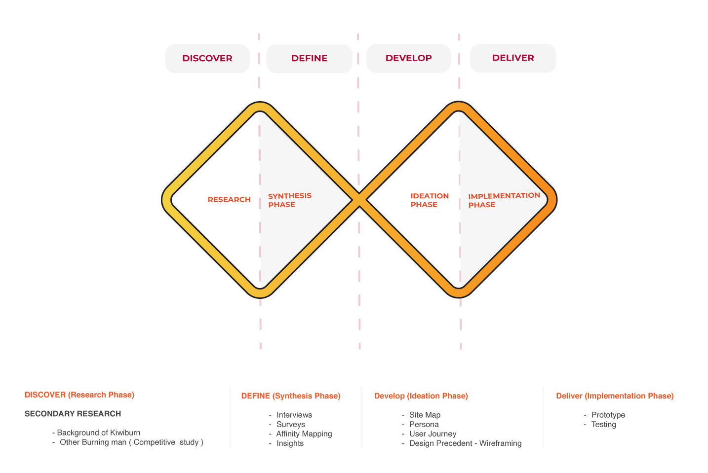
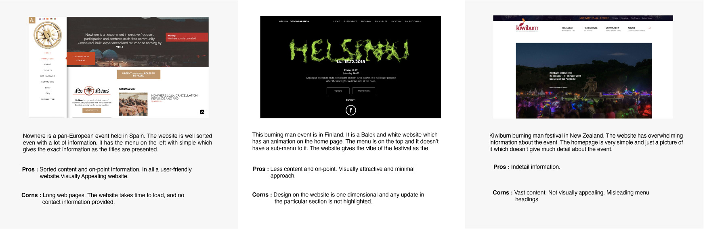
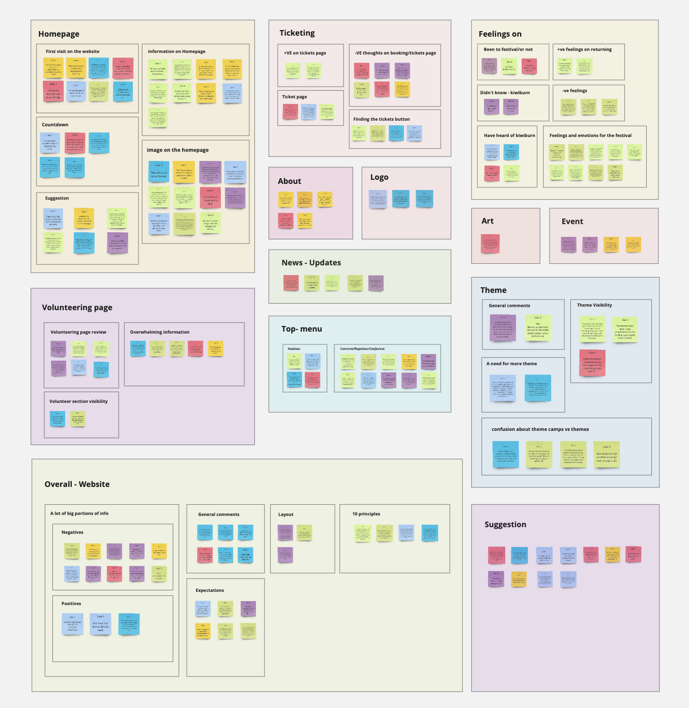
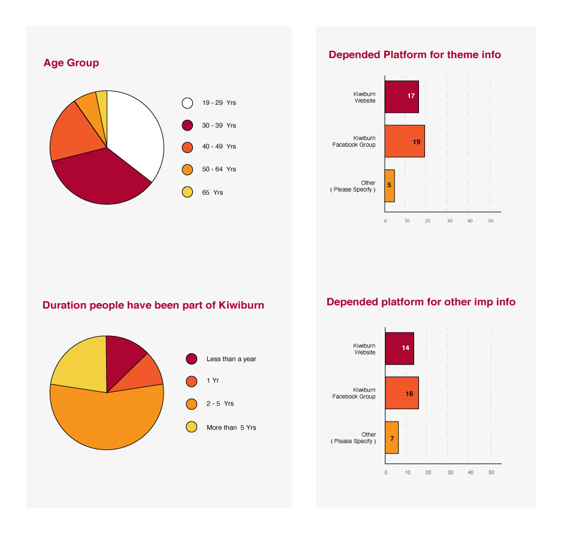
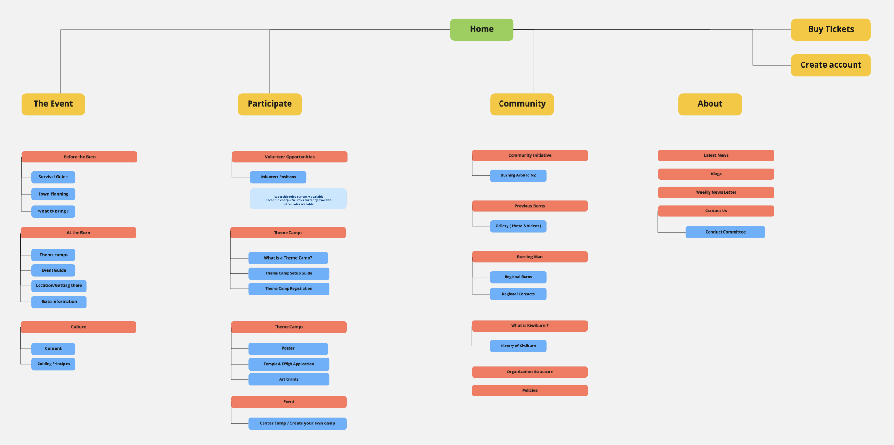
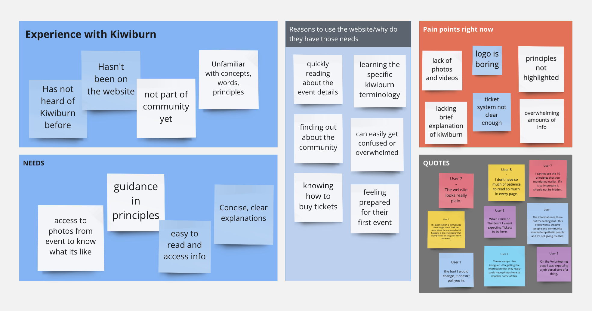
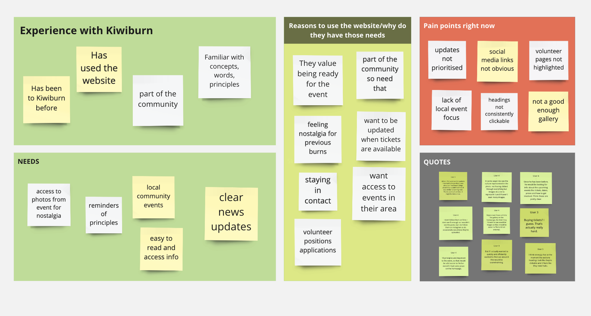
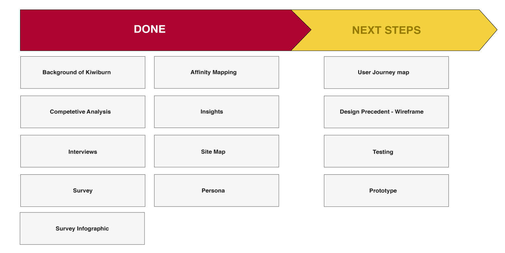

The design and content layout of the website can make an impact on the experience and journey of the user. It is essential that the platform should be user-friendly and visually appealing to the audience of a particular field. Users come across various websites and apps one better than the other, most of them aiming to provide a better experience. Therefore, the users are habituated to get all the information they want without a hassle and perform simple interactions to get their work done.Our Research was based on solving and finding following research statements.
- Designers face is incorporating enormous content with keeping in mind the visual aspect of the website.
- Which online medium (Kiwiburn facebook page or Kiwiburn website) do they use to retrieve the information and why did they use that particular medium
Role - UX Researcher
Problem Space
Kiwiburn wanted to work on the redesigning of the Kiwiburn website as the visuals don’t suit the vibe of the festival.The purpose that defines the festival is missing in the website and the users have to access two platforms “Kiwiburn Facebook page” and “Kiwiburn Website” for two different purposes which is troublesome. Understanding the needs of the user while accessing the two different platforms can help us combine the two platform in one main platform effectively.
Biases
- Sampling Bias - For the survey, the only focus was the people who have been a part of the Kiwiburn festival as they are the main target audience. The survey was posted on the Facebook group and was sent through the Kiwiburn newsletter which was the only two means of getting the responses as the target audience was present in those groups.
- Time Bias - As there was only two medium through which the survey can be sent the time to get sufficient responses were about one and a half weeks of the wait. In the meantime had covered our interviews and analysis on them but had to wait for the survey responses.
- Personal Bias - Our assumption could vary from the response we received as we had our own personal biases and influence on the research as our thoughts are not similar to the type the focused audience have.
Target Audience
Our main target audience is the users who have attended the Kiwiburn festival from the ages 19 years and above. As the Kiwiburn has already a huge crowd of about 5000 who request for ticket and out of which only 2000 gets the entry for festival. But we have targeted the users who have never been to Kiwiburn to get a third-party insight.
- People who have been to Kiwiburn and used Kiwiburn Website or Kiwiburn Facebook group.
- People who are not aware / are aware but have not been to the festival.
Process Model
I chose the “ Double Diamond ” design approach to deliver the process flow of this project, as the model provides a clear understanding of the current stage we are in the process flow.This makes it suitable to be used in this project to demonstrate the stages the best way possible.
Process Model - Discover
Background of Kiwiburn
We started with understanding the deep roots of the festival as we had never come across a burning man festival. While investigating about the Kiwiburn festival we inferred that it is a participatory festival where all can participate and volunteer to make the festival successful. There is no center stage or any particular activity that can be highlighted, anyone can register and plan their own activity/event. In Kiwiburn there is no exchange of money the participants simply need to buy the tickets before the festival. People who work for Kiwiburn provide their services voluntarily.
Competitive Study
To gain a deeper understanding of the festival we decided to look for similar burning man festivals around the globe. This research helped us to get a competitive study of the website as it enabled us to distinguish the experience the other burning man festival provides through their online platforms. Following is the Competitive study.
Process Model - Define
Interviews
The Qualitative research was conducted by interviewing 7 people. Out of which 5 were the people who were not a part of kiwiburn and the rest two had visited Kiwiburn once.
The questions were designed considering these two groups of Interviewees:
- People who have not been to/ heard of Kiwiburn.
- People who are a part of Kiwiburn.
With this Qualitative measure we got to know the reactions of the user whiles going through the website. Along with what they liked and did not liked.
Affinity Mapping
The clusters are divided on the insights we got on each page of the website from the interviewees.
https://miro.com/welcomeonboard/oNOTxGs4KFoz3JsUzsmI1bK78va0W405R7YZdG9KP21JWfnHKT6ywRCTHuNrbk8f
|
What do they think of the overall website -
According to the interviewees, the website lacks the essence of the festival. They feel that the website should be happening and should be able to connect the audience with pictures and videos of the burn. |
Homepage design and information -
The current homepage of the website has only a picture and a date, interviewees were confused as there was no more information regarding the event. Some interactions with the image on the home were expected. According to the interviewees, the main page of the website should carry the vibe of the festival and should be inviting, which currently is missing. |
|
Thoughts on information available on the website -
The website has overwhelming information according to the interviewees. While reading the information on the webpage they feel that they are reading an article or a new paper. The main information is getting lost in the pile of information provided on the website. So much of the text on every page leads to boredom. |
News and updates of the festival -
Interviewees felt that the updates and news should be located on the main screen of the website where it can catch the eye of the person accessing the website. It should be prominent and easy to locate. |
|
Misleading menu titles -
Interviewees were confused to find the information under the menu title that they think the information did not belong in that section. |
Survey
We got 30 total responses in 1 and a half weeks time. This quantitative measure was considered to fulfill our research objective of understanding, which information should be prioritized to be displayed on the website. The best way to represent and understand the survey data was to design an infographics which will allow us to scale the data accordingly.
|
Kiwiburn Website vs Kiwiburn Facebook page -
For News and updates, users rely on the Facebook group rather than the website. It is the same for the theme as well, the current year’s theme is easily known to the users via Facebook rather than the website. |
Kiwiburn website is used for -
The website is mostly used for getting the information regarding the activities and guidelines of the event. People also use the website for ticket booking and to fetch details regarding it. |
|
The layout of the Kiwiburn website -
According to the survey, the section which holds the most priority is the “ News and update section ”, which is not prominent enough on the website. The countdown displayed is good but is hidden at the bottom of the page. |
Process Model - Ideation
Site Map
After analysing the insights from the qualitative and quantitative research, we decided to restructure the current site map before moving onto the journey mapping. As the Journey map will be based on the redefined structure of the website.
https://miro.com/welcomeonboard/6hhgJOjHbX86cpIq1gurIjD4G1w0EEofn1imU7GuvDDkZ6JEPh5yBlgW1BSyT6eo
Persona
User 1 - Not familiar with the festival
https://miro.com/welcomeonboard/7PgVVAp9KVIl17oGmiY1LI8X40Y9SGnfmGz6hD4GyRZbV0HhU1o6dkfSJweXy77Z
User 2 - Have been to Kiwiburn Festival
https://miro.com/welcomeonboard/7PgVVAp9KVIl17oGmiY1LI8X40Y9SGnfmGz6hD4GyRZbV0HhU1o6dkfSJweXy77Z
Tasks to Achieve
Project Conclusion
Considering the Double diamond framework, planning, strategizing, and implementing the plans into actions was helpful. As we got our briefings from our industry partners, we wanted to know more about the community about this festival. We started our secondary research, which involved digging on to the background of Kiwiburn and understanding about the Burning Man festivals worldwide. We used the information on the other burns and did a competitive study with Kiwiburn. Buy comparing it allowed us to gain knowledge of what experience on the online platform they are providing.
After that, we began by preparing the questions for quantitative and qualitative research. The interviews helped us to understand how the experience of the users could while accessing the website, and the survey helped us to understand the priority of the sections on the site. Based on the interviews, affinity maps were created, and to make sense of the survey data, the infographic was created. Affinity mapping on the survey data could not be done as it was not a behavioral survey; it was more like a survey trying to understand which information is essential.
Once we got the insights from both the researches sitemap was created. And then personas were designed on two types of users, one who had no idea about Kiwiburn, and the second was the users who were part of Kiwiburn.
Due to time limitations and various other biases, some work in Develop activity, as well as the work in Deliver activity, could not be achieved. But as we will be continuing our project with Psychoactive studios, we are aiming to implement all of the remaining work in these two weeks.
The experience with Psychoactive studios exciting and challenging, but learned a lot from Andrew ( Director of Psychoactive studios ). He guided us throughout the process; the morning stand up calls gave us a chance to be a part of the industry and know in-depth about the process.
As a whole, a great experience, and from the insights we have gained from the research, will help us create a smooth journey for the user or Kiwiburn.